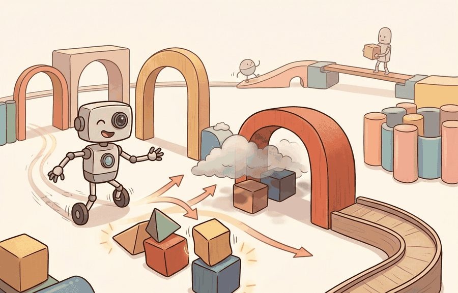
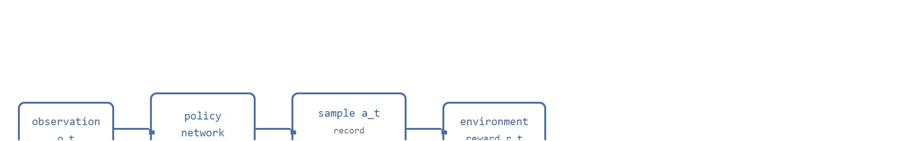
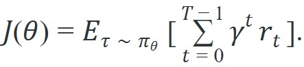

"A deterministic policy commits to one answer. A stochastic policy keeps a door open, and for a robot feeling its way through contact, that door is load-bearing."
A Policy Learning to Touch

This section assumes familiarity with the agent-environment loop and the expected discounted return introduced in section 2.5, and with probability distributions over action spaces covered in section 3.2. The log-probability mechanism defined here is the direct prerequisite for section 15.2, which derives the REINFORCE gradient estimator, and for section 15.3, which extends it to Proximal Policy Optimization (PPO). The stochastic-policy framing also recurs in Part IX alongside locomotion controllers where exploration over contact configurations is essential.
A robot hand attempts to pick up a bolt for the thousandth time. Every attempt is slightly different: finger torque, contact angle, grip speed. No lookup table can enumerate those combinations. The only way to improve is to directly adjust the probability distribution over actions based on which outcomes were rewarding. That is direct policy optimization, and it is why almost every state-of-the-art embodied manipulation system now trains with policy gradients rather than value tables. In this section you will derive the core gradient estimator, understand why stochastic policies are non-negotiable in contact-rich control, and implement REINFORCE from scratch so the mechanics are fully transparent before PPO arrives.
Ask a value-based agent to grasp a bolt and it answers a question about the world: which action looks best right now? Ask a policy-gradient agent the same thing and it answers a question about itself. It asks how to bend the dial that governs its own behavior so the next thousand grasps land more often. That second question, as Figure 15.1A illustrates, is what lets a stochastic policy turn each exploratory action into reusable evidence by recording what it sampled, how likely that sample was, and what reward followed. Value-based methods ask, "Which action has the highest estimated value?" Policy-gradient methods ask a different question: "How should the parameters of the action distribution move so future sampled behavior becomes more successful?" For a Franka Panda arm sending 7-DoF joint velocity commands at 1 kHz, that shift matters enormously. A Q-table over continuous joint-velocity space requires enumerating combinations the hardware never reaches. A Gaussian policy with a learned mean and diagonal covariance gives the optimizer a differentiable handle on every dimension at once. That is what it means to optimize the distribution, not the decision. The same logic applies to Boston Dynamics Spot executing footstep offsets over uneven terrain. Its action space is a 12-dimensional continuous vector. Hardware joint limits force every sampled command through an actuator clip before it reaches the real servo. The policy must account for that clip explicitly; otherwise the gradient update credits the wrong action. Figure 15.1B below traces this loop step by step: observation into policy network, sampled action with its recorded log probability, environment reward, and the gradient update that flows back through that log probability rather than through the physics.

Direct policy optimization is the right tool when three conditions hold: the action space is continuous or high-dimensional (joint velocities, end-effector poses, finger torques), the reward arrives sparsely or only at episode end so a value table cannot be built from dense feedback, and the policy must represent genuine uncertainty across multiple plausible actions rather than committing to one. Value-based methods such as DQN work well on discrete, low-dimensional action sets with dense reward; on a 12-degree-of-freedom quadruped leg controller they require discretizing a space so large that the table becomes unmanageable. The how follows from the when: once the policy is a distribution parameterized by a neural network, gradient ascent on expected return is the only practical handle, because the distribution's parameters are differentiable even when the environment physics are not.
The object we optimize is the expected discounted return:

Here $\theta$ are policy parameters, $\tau$ is a trajectory of observations, actions, and rewards, $\pi_\theta(a_t \mid o_t)$ is the probability or density assigned to an action, and $\gamma$ discounts delayed consequences. Direct optimization means we adjust $\theta$ to increase $J(\theta)$ rather than first learning a separate action-value function and acting greedily from it.
For a physical robot, $J(\theta)$ captures something value tables cannot: the compounding cost of sequential decisions under actuator noise and contact uncertainty. A grip that succeeds only when ten earlier joint adjustments were correct is worth more than ten isolated single-step rewards; the discount $\gamma$ encodes exactly that temporal credit, preventing the policy from trading a stable grasp now for a marginally better one three seconds later that hardware jitter will likely forfeit.
To maximize $J(\theta)$, we estimate its gradient from sampled trajectories. The environment physics are not differentiable, so the gradient cannot flow through the world; it flows through the policy's own log probabilities instead. Each rollout is a noisy gradient sample, and averaging many rollouts cancels the noise. The optimizer then steps in the direction that makes high-return trajectories more probable under the current distribution.
Think of a chef adjusting a recipe by taste rather than by chemistry. The chef cannot differentiate through the Maillard reaction or the precise thermal conductivity of the pan; those are the "environment physics." What the chef can adjust is the recipe itself: how much salt, how long on the heat, how often to stir. Each attempt produces a dish and a verdict (good or not). The log probability of the chosen action is like the recipe card the chef filled out before cooking: it records exactly what was tried, so after tasting the result the chef knows which knob to turn up and which to turn down. The gradient flows through that recipe card, not through the pan.
A deterministic policy can only be judged by the action it already chose. A stochastic policy gives the learner a local experiment: it knows how probable the chosen action was, so it can increase that probability after good outcomes and decrease it after bad outcomes.
The policy is a probability distribution over the action space, not a lookup table. For a discrete mobile robot action set, $\pi_\theta$ might be a softmax over forward, left, right, and stop. For a manipulation controller, it might be a Gaussian over joint velocity commands with a learned mean and standard deviation. In both cases, the policy must expose two things for training: the sampled action and the log probability of that exact action.
The central intuition is credit assignment through sampling (credit assignment means tracing an eventual reward back to the specific earlier action responsible for it). If a robot nudges a drawer handle and the drawer opens later, the update cannot differentiate through the drawer physics, contact impulses, camera exposure, or environment reset. It can still differentiate through the policy's own probability of the sampled motion. REINFORCE and PPO both stand on that foothold. A value-table approach on a 12-DoF arm joint-velocity space may need orders of magnitude more successful grip episodes before the Q-values stabilize than a Gaussian policy gradient needs on the same task. The policy gradient wins here because it updates a continuous distribution rather than filling a discrete table cell by cell, though exact ratios depend heavily on reward shaping and environment resets. In practice, coarsely discretizing a 12-DoF joint-velocity space to just 5 bins per dimension produces $5^{12} \approx 244$ million table cells: a policy gradient sidesteps that enumeration entirely, updating a handful of network parameters instead, which is typically why even a naïve REINFORCE run can learn a stable grasp policy in as few as a few thousand episodes on simple tasks, whereas a Q-table variant may never fill enough cells to converge at all (exact episode counts depend heavily on task difficulty and reward shaping).
So far: the policy is a probability distribution rather than a lookup table, credit for a delayed reward is assigned through the sampled action's own log probability rather than through the environment's physics, and this is precisely why a policy gradient sidesteps the combinatorial blowup that would sink a Q-table over a high-dimensional joint-velocity space. The algorithm box below turns that idea into a concrete per-step procedure.
Input: Policy parameters $\theta$, observation $o_t$ at step $t$, action distribution family (e.g., Gaussian or categorical)
Output: Sampled action $a_t$, log probability $\log \pi_\theta(a_t \mid o_t)$, and rollout record for one step
Direct policy optimization turns rollout data into pairs of log probabilities and returns. The update says, in effect, "actions that appeared in high-return trajectories should become more likely in similar observations, and actions from low-return trajectories should become less likely."
Code Fragment 1 below shows the smallest useful contrast: a deterministic controller always chooses the largest probability action, while a stochastic controller samples from the whole distribution and records the probability of what it did.
# Compare greedy action selection with stochastic sampling.
# The sampled action keeps a log probability, which policy gradients need.
import math
import random
random.seed(7)
actions = ["move_left", "move_right", "stop"]
logits = [0.2, 1.4, -0.7]
exp_logits = [math.exp(x) for x in logits]
total = sum(exp_logits)
probs = [x / total for x in exp_logits]
greedy_action = actions[probs.index(max(probs))]
sampled_action = random.choices(actions, weights=probs, k=1)[0]
sampled_prob = probs[actions.index(sampled_action)]
print("policy probabilities:", dict(zip(actions, [round(p, 3) for p in probs])))
print("greedy action:", greedy_action)
print("sampled action:", sampled_action, "log_prob:", round(math.log(sampled_prob), 3))move_left, move_right, and stop. The sampled action carries a log_prob, which is the training handle used later by REINFORCE and PPO.The worked example is small, but it shows the contract. The policy must not only choose an action; it must remember how surprising that action was under the current parameters. Without that record, the optimizer cannot say whether the action should become more or less likely after the return is known.
Trace the core policy-gradient idea with a tiny categorical policy over three actions, using the probabilities from Code Fragment 1: $\pi = \{$move_left$=0.212,$ move_right$=0.702,$ stop$=0.086\}$, so the log probabilities are $\log 0.212 = -1.551$, $\log 0.702 = -0.354$, $\log 0.086 = -2.453$.
Rollout A: the policy samples move_right (log-prob $-0.354$) and the episode return is $G_A = +1.0$. Rollout B: the policy samples stop (log-prob $-2.453$) and the episode return is $G_B = -0.5$.
The REINFORCE per-sample contribution is $G \cdot \nabla_\theta \log \pi_\theta(a \mid o)$. We cannot show the raw parameter gradient with numbers alone, but we can show the scalar weight that multiplies it: rollout A contributes a weight of $+1.0$ and rollout B contributes $-0.5$. So the update pushes probability mass toward move_right (positive return, increase its log-prob) and pulls mass away from stop (negative return, decrease its log-prob). After one small gradient step the new probabilities might shift to roughly $\{$move_left$=0.205,$ move_right$=0.730,$ stop$=0.065\}$: move_right rose, stop fell, and the unsampled move_left drifted only because the softmax must renormalize. That sign-and-magnitude logic, return times the gradient of the recorded log-prob, is the entire engine behind REINFORCE and PPO.
In practical experiments, Gymnasium provides the environment interface, and libraries such as CleanRL, Stable-Baselines3, RSL-RL, and rl_games keep the policy distribution, action sampling, and log-probability bookkeeping consistent. That does not remove the need to understand the contract; it keeps small bookkeeping errors from becoming training failures.
A policy can look stochastic in code while behaving deterministically in the robot. This happens when the action standard deviation collapses, action clipping hides large samples, or a low-level controller smooths every command into the same motion.
A common assumption is that stochasticity is a temporary training convenience, a way to explore, that should be replaced by a deterministic policy at deployment. In simulation this can appear harmless, but embodied agents face contact uncertainty, sensor noise, and actuation variability that a deterministic policy cannot adapt to: it produces the exact same joint command from every observation it has seen before, leaving no mechanism to recover from unexpected contact or slight sensor drift. The correct mental model is that the stochastic policy is the deployment artifact, not a scaffold to discard. At test time, sampling from the distribution lets the agent express calibrated uncertainty over ambiguous grasp configurations, while the log probability remains the training handle that made the learned behavior meaningful in the first place.
For a quadruped learning rough-terrain locomotion, a stochastic policy can try slightly different foot placements from the same body pose. The rollout log should preserve the sampled footstep command, its log probability, terrain patch features, slip events, and final stability score.
OpenAI's Dactyl system reorients a cube in a Shadow Hand using a stochastic Gaussian policy over 20 actuated joints, trained with PPO entirely in simulation and transferred to the physical hand. The deliberately retained action stochasticity, combined with randomized dynamics, is what lets the deployed policy absorb sensor noise and unmodeled contact forces well enough to keep rotating the cube on real hardware.
A stochastic policy is not indecisive. It is keeping receipts for the choices it made, so the optimizer can reward the useful experiments and retire the expensive ones.
Diffusion policies as stochastic action generators. Rather than parameterizing a Gaussian over joint commands, recent work treats the action distribution as a denoising diffusion process. Chi et al. (2024, "Diffusion Policy," RSS) show that diffusion-based stochastic policies outperform Gaussian PPO baselines on dexterous manipulation by representing multimodal action distributions that a unimodal Gaussian cannot express. Active research asks how to compute policy-gradient updates efficiently through the denoising chain without collapsing to a single mode.
Flow-matching and consistency models for on-policy exploration. Meta FAIR and CMU (Black et al., 2024, "pi0" and related flow-matching policy work) have pushed stochastic policies toward continuous normalizing flows that allow exact log-probability computation, resolving the tanh-correction bookkeeping problem that corrupts importance-sampling ratios in PPO. The open research question is whether flow-matching policies trained with policy gradients can maintain calibrated entropy at the contact-force timescale of real hardware without catastrophic entropy collapse.
Constrained and safe direct policy optimization for physical deployment. Lyapunov-barrier approaches (Thananjeyan et al., Berkeley AUTOLAB, 2024) embed safety constraints directly into the policy distribution so that every sampled action is provably within a safe set before it reaches the actuator, eliminating the train/execute discrepancy introduced by post-hoc clipping. The approach remains tractable only for low-dimensional constraint surfaces; scaling it to full-body humanoid contact configurations is an open problem a PhD student could attack by combining control-barrier functions with learned implicit constraint manifolds.
Open problem for PhD research. Current stochastic policies record a scalar log probability per step, but contact-rich tasks involve discontinuous physics where the action that caused a slip is not the step that logged the lowest log probability. Designing a rollout attribution scheme that correctly assigns credit across contact events, without requiring differentiable simulation, is an unsolved theoretical and empirical challenge directly upstream of PPO and REINFORCE for dexterous manipulation.
For a robot arm policy, can you name the action distribution, the actuator bounds, the log-probability field saved in the rollout buffer, and the failure mode that would make the recorded probability misleading?
Naming those fields and failure modes, as the self-check asks, is really a question about how the distribution itself is shaped, because every entry in the rollout buffer is a consequence of that choice. A direct policy optimizer only sees the consequences of actions that were actually sampled. That makes distribution design a systems decision, not a cosmetic modeling choice. Too little entropy prevents discovery; too much entropy spends rollouts on unsafe or uninformative behavior.
For embodied agents, the action distribution also sits between learning and control. A Gaussian policy over joint velocity commands may sample a value that the safety layer clips. If training records the unclipped log probability but the robot executes the clipped command, the update credits the wrong action. The implementation must log both the policy sample and the executed command. The table below summarizes how the policy form and its embodied cautions change with the action space.
| Action Space | Policy Form | Embodied Caution |
|---|---|---|
| Discrete mode choice | Categorical softmax | Make invalid actions impossible before sampling, not after the fact. |
| Joint velocity or torque | Gaussian with learned mean and scale | Track clipped commands because actuator limits change what the world receives. |
| Bounded continuous command | Tanh-squashed Gaussian | Account for the squashing transform when computing log probabilities. |
| High-level skill selection | Hierarchical categorical policy | Log the selected skill and the low-level controller outcome together. |
Before reading on, predict: if your policy clips a sampled joint-velocity command from 1.35 rad/s down to 1.00 rad/s and stores the log probability of 1.35, what happens to the gradient signal? Check your answer against Code Fragment 2 below.
When using a tanh-squashed Gaussian (common in SAC and squashed-Gaussian PPO variants), you must subtract the log of the Jacobian correction term from the pre-squash log probability: log_prob -= torch.log(1 - action_squashed**2 + 1e-6).sum(-1). Omitting this step makes the stored old_log_prob incorrect, which corrupts the importance-sampling ratio (the ratio of new-policy to old-policy probability that PPO uses to re-weight each sample) and silently destabilizes training. The small epsilon 1e-6 prevents a log(0) at the boundary; without it, actions that saturate to exactly 1 or -1 produce NaN gradients that are hard to trace back to this source.
A robust implementation treats action sampling as part of the evidence artifact. Code Fragment 2 sketches the fields a rollout buffer needs before PPO or REINFORCE can make a valid policy-gradient update.
# Define the rollout row that direct policy optimization needs.
# Store both sampled and executed actions so safety clipping is visible.
from dataclasses import dataclass, asdict
@dataclass
class RolloutRow:
observation_id: str
sampled_action: float
executed_action: float
old_log_prob: float
reward: float
clipped_by_safety: bool
def as_row(self) -> dict[str, object]:
return asdict(self)
row = RolloutRow(
observation_id="episode_0042_step_0017",
sampled_action=1.35,
executed_action=1.00,
old_log_prob=-0.42,
reward=0.8,
clipped_by_safety=True,
)
print(row.as_row())RolloutRow dataclass separates sampled_action from executed_action. That distinction matters because policy-gradient math credits the sampled action, while the embodied system may have executed a clipped command.When direct policy optimization fails, first inspect the action distribution before blaming the optimizer. Check entropy, action clipping, invalid-action masking, controller saturation, and whether high-return episodes came from meaningful exploration or lucky resets. Then rerun a small perturbation panel with fixed seeds so the policy change is compared against the same embodied conditions.
For direct policy optimization, compare only construct-matched metrics co-computed in one pass on one configuration: same reset states, same policy checkpoint, same action bounds, same perturbation suite, and the same success definition. Save returns, action entropy, clipping rate, controller failures, and videos or state logs in one artifact so the policy improvement and the embodied behavior are backed by the same run.
Direct policy optimization works when the policy distribution, rollout buffer, and executed commands describe the same behavior. If those three records diverge, the gradient is learning from a story the robot did not actually enact.
Choose a discrete or continuous embodied task and write the policy distribution contract. Include the action bounds, sampling rule, log-probability field, safety clipping rule, and one diagnostic plot that would reveal exploration collapse.
Goal: see, empirically, why stochasticity is load-bearing by forcing a continuous-control policy to become deterministic and watching learning stall.
Tools needed: Python with gymnasium, stable-baselines3, and tensorboard (pip install gymnasium stable-baselines3 tensorboard). Use the Pendulum-v1 environment, which has a 1-dimensional continuous torque action and trains in a few minutes on CPU.
What to do: train PPO for about 100k timesteps with the default entropy coefficient (ent_coef=0.0 in SB3's PPO is the baseline; also try a small positive value such as 0.01), logging to TensorBoard. Then rerun with the policy's log standard deviation frozen near zero (set log_std_init=-4.0 and disable its gradient) to approximate a deterministic policy from the start.
What to vary: the entropy coefficient (0.0, 0.01, 0.1) and the initial/frozen action standard deviation.
What to observe: plot mean episode return and the policy's action standard deviation (or train/entropy_loss) over training. The near-deterministic run should explore poorly and plateau at a low return, while the runs that retain entropy climb higher before the standard deviation naturally shrinks. You are watching exploration collapse in real time, the exact failure mode the section warns about.
Beginner (weekend): Train a stochastic Gaussian policy on the Gymnasium Pendulum-v1 environment using REINFORCE: implement the stochastic action-sample loop from scratch, log sampled actions and their log probabilities, and plot entropy over training to confirm the policy does not collapse to deterministic. The key challenge is correctly computing the log probability of a clipped Gaussian action and verifying that your rollout buffer separates the sampled value from the executed value.
Intermediate (1 to 2 weeks): Port the same REINFORCE loop to a contact-rich MuJoCo task such as HandManipulate-v1 in Gymnasium, where the policy controls 20 finger actuators simultaneously. The key challenge is choosing between a diagonal Gaussian and a full-covariance Gaussian over the joint-velocity command, bounding the standard deviation so the policy stays physically plausible, and diagnosing exploration collapse by tracking per-dimension action entropy and actuator clipping rate across training.
Intermediate (1 to 2 weeks): Build a minimal direct-policy-optimization loop for a legged robot in Isaac Lab or PyBullet using a pre-built quadruped model: wrap the environment in a Gymnasium interface, implement a Gaussian policy in PyTorch with tanh squashing and the Jacobian log-probability correction, and compare two rollout buffer designs, one that stores only sampled actions and one that stores both sampled and executed commands, to quantify how safety clipping distorts the gradient signal. The key challenge is isolating whether training failures originate from the action distribution, the clipping mismatch, or the reward shaping.
This section established the policy distribution and rollout record that direct optimization needs. Next, Section 15.2 derives the likelihood-ratio estimator that turns those saved log probabilities into a policy-gradient update.
Schulman, J. et al. (2017). Proximal Policy Optimization Algorithms. arXiv.
Introduces the clipped surrogate objective that prevents large policy updates without the second-order KL constraint of TRPO. Read Section 3 for the clipping mechanism and Section 5 for the implementation details including value-function loss coefficient and entropy bonus that appear in nearly every modern PPO codebase.
Derives the generalized advantage estimator (GAE) as an exponentially weighted average of n-step returns, controlled by the lambda parameter. Read Section 3 for the bias-variance trade-off analysis; in practice lambda around 0.95 is the default in most PPO implementations and understanding why requires this paper.
Schulman, J. et al. (2015). Trust Region Policy Optimization. ICML.
Introduces the trust-region constraint that bounds policy update size using KL divergence, providing a monotonic improvement guarantee. Read Section 3 for the surrogate objective and Theorem 1 for the lower bound; PPO simplifies this into a clipped ratio that achieves similar stability with far less implementation complexity.
Formalizes the policy gradient theorem showing that the gradient of expected return can be expressed as an expectation over state-action pairs. Read to understand why on-policy sampling is sufficient for an unbiased gradient estimate and how the baseline reduces variance without introducing bias.
The original REINFORCE paper deriving the likelihood-ratio policy gradient. Read Section 2 for the REINFORCE update rule and Section 5 for baseline subtraction. This is the direct predecessor to actor-critic and PPO; understanding it makes the clipped surrogate objective in Schulman et al. 2017 concrete.
CleanRL documentation and source code.
Provides single-file, dependency-minimal RL implementations that make every algorithmic choice visible on one screen. Read the PPO and SAC files side by side with the corresponding papers; CleanRL is the fastest way to verify that you understand which implementation details matter versus which are optional.